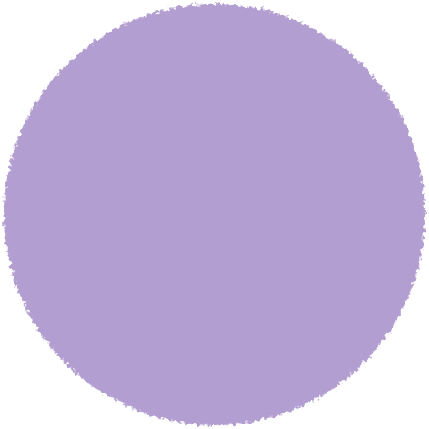
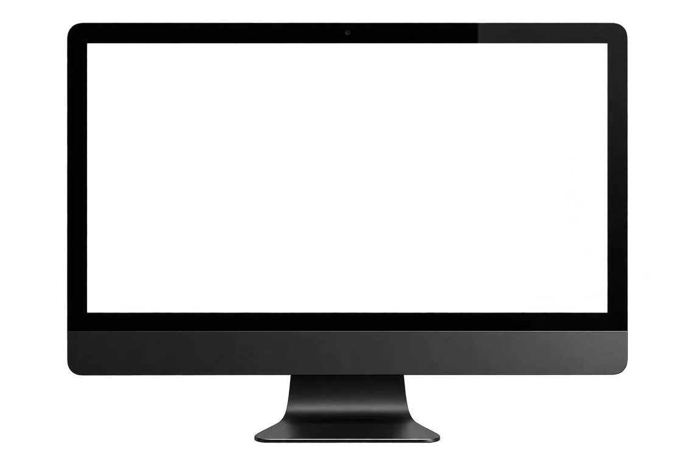
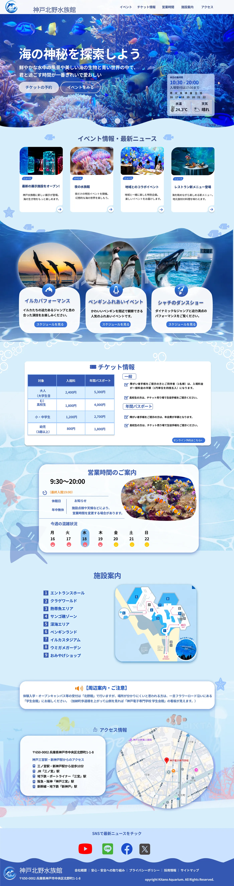
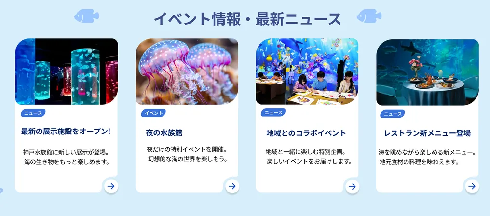
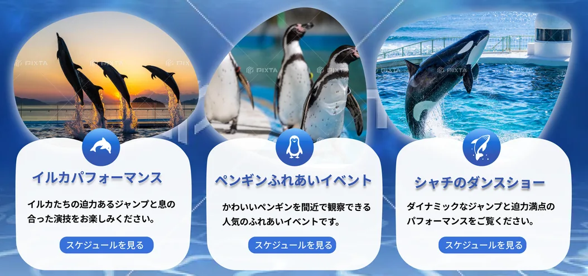
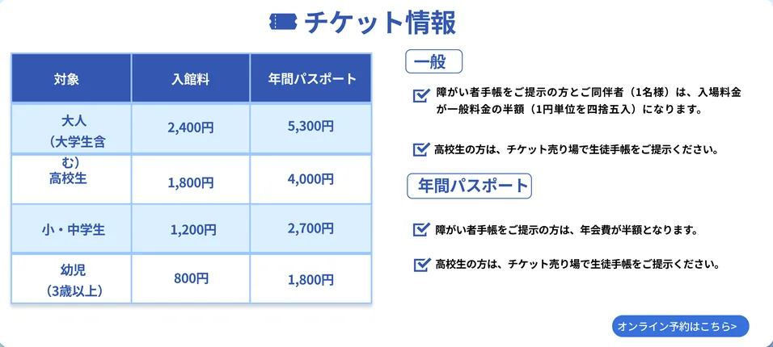
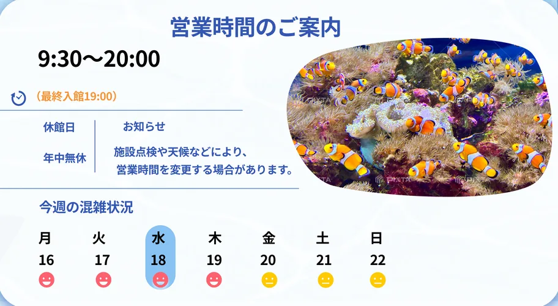
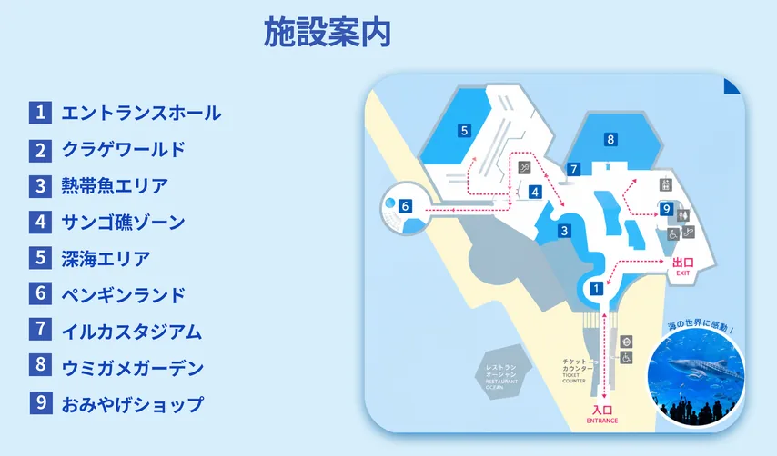
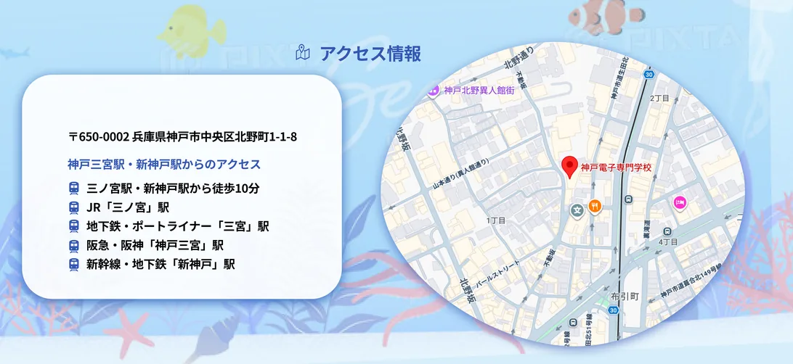

WEB DESIGN
水族館Webサイト
神戸北野水族館の魅力を伝える
Webサイトをデザインしました。
海の世界観と情報の見やすさを意識しました。



制作概要
神戸北野水族館の魅力や最新情報を、訪問者に分かりやすく伝えることを目的に制作しました。
直感的に情報を探せるビジュアルと、海の世界観を感じられるWebサイトを目指しました。
サイト構成
-
01
メインビジュアル
水族館の魅力が一目で伝わるよう、
海の写真を大きく使用し、印象的なファーストビューにしました。 -
02
イベント・ニュース
イベントや最新ニュースを
カード形式でまとめ、
目的の情報を見つけやすくしました。
-
03
体験情報
イルカ・ペンギン・シャチなどの
写真を使い、各ショーの魅力が
直感的に伝わるデザインにしました。
-
04
チケット情報
入館料や年間パスポートの情報を表に
整理し、料金を比較しやすくしました。
-
05
営業時間
営業時間や休館日、混雑状況をまとめ、
来館前に必要な情報を確認できるように
しました。
-
06
施設案内
館内マップとエリア情報を組み合わせ、
初めて訪れる人でも施設の位置関係が
分かるようにしました。
-
07
アクセス情報
住所・交通アクセス・
周辺情報を整理し、
水族館までの行き方を
確認しやすくしました。
ターゲット / 学んだこと
・水族館や海の生き物が好きな方
・家族連れ、カップル、観光客
・イベントやチケット情報を探している方
ユーザー目線で情報を整理することの重要性を学びました。
情報の優先順位や配置を工夫することで、
見やすく使いやすいWebサイトを作ることができました。